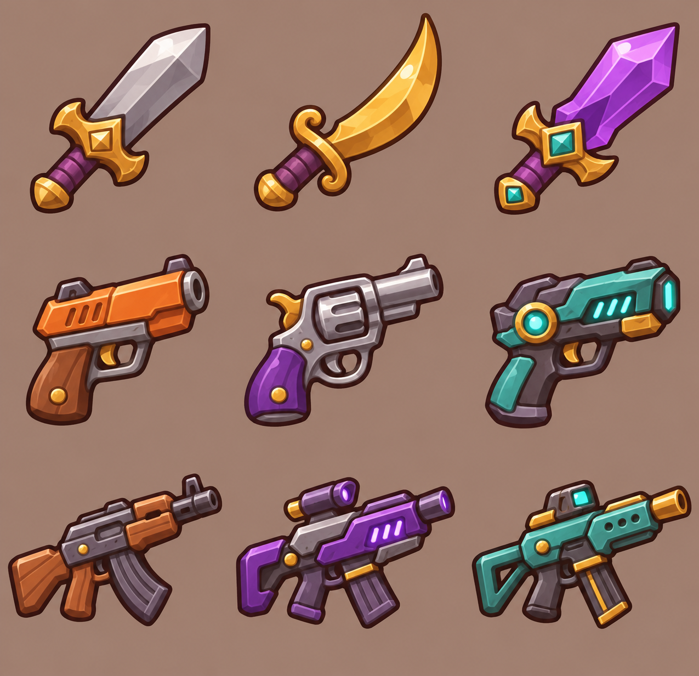
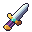
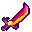

上沿亮，底部沉
面板使用不透明底色。内部渐变模拟受光，1px顶部亮边、3px底部暗边形成厚度。
当前：48 × 48 原生像素 · 共享64色 · 无抖动 · 显示96px
点击物品查看选中效果

固定像素网格 · 13 色 · 透明背景 · 此区域无后处理


几何实体 · 有色暗部 · 局部高能量
蓝紫环境光托起暗部，暖色只落在奖励与关键物品上。光晕留给选中项，普通面板使用不透明底色。
短比例 · 清晰轮廓 · 独立透明素材
当前 64 px · 点击物品查看选中效果
#111226#252442#39365E#9960FF#63FFF0#FFE39B已选择：脉冲步枪
大窗口多段折线并局部加厚；卡片使用不同切角；同一控件切换状态时保持轮廓稳定。
独立样板数据，不写入游戏存档
暖金只占小面积，衬托冷色界面。
面板使用不透明底色。内部渐变模拟受光，1px顶部亮边、3px底部暗边形成厚度。
高饱和色约占15–20%，高亮点缀约5%。选中项和主按钮可以发光，正文与普通边框保持清晰。
紫蓝统一背景与面板；青色表达能量与可操作；暖金表达价格、收益与奖励。